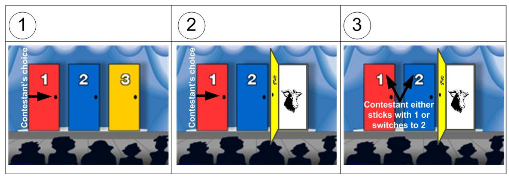

第 1 章 概率論入門：定義與公理
1.1 三個概率公理：
- 對於任意事件 \(A\)，它發生的概率 \(P(A)\) 滿足這樣的不等式： \(0 \leqslant P(A) \leqslant 1\)
- \(P(\Omega)=1\) , \(\Omega\) 是全樣本空間 (total sample space)
- 對於互斥（相互獨立）的事件 \(A_1, A_2, \dots, A_n\) 有如下的等式關係： \(P(A_1\cup A_2 \cup \cdots \cup A_n)=P(A_1)+P(A_2)+\cdots+P(A_n)\)
你是不是覺得上面三條公理都是廢話。 不用擔心，我也是這麼覺得的。因爲所有人都認同的道理，才能成爲公理 (axiom)，因爲它們是不需要證明的自然而然形成的人人都接受的觀念。(axiom: a saying that is widely accepted on its own merits; its truth is assumed to be self-evident)
然而，正是這樣顯而易見的道理，確是拿來建築理論的基石，千萬不能小看了他們。例如，我們看下面這個看似也應該成爲公理的公式，你能證明嗎：
\(P(A_1\cup A_2) = P(A_1) + P(A_2) - P(A_1 \cap A_2)\)

證明：
先考慮 \(A_1 \cup A_2\) 是什麼（拆分成三個互斥事件）
\(A_1 \cup A_2 = (A_1\cap \bar{A_2})\cup(\bar{A_1}\cap A_2)\cup(A_1\cap A_2)\)
運用上面的公理2 3
\(\therefore P(A_1 \cup A_2) = P(A_1\cap \bar{A_2}) + P(\bar{A_1}\cap A_2) + P(A_1\cap A_2) \;\;\;\;\;\;(1)\)
再考慮 \(A_1=(A_1\cap A_2)\cup(A_1\cap\bar{A_2})\) 繼續拆分成兩個互斥事件
\(\therefore P(A_1)=P(A_1\cap A_2)+P(A_1\cap\bar{A_2})\) 整理一下：
\(P(A_1\cap\bar{A_2})=P(A_1)-P(A_1\cap A_2)\)
同理可得: \(P(\bar{A_1}\cap A_2)=P(A_2)-P(A_1\cap A_2)\)
代入上面第(1)式可得：
\(P(A_1 \cup A_2) =P(A_1)-P(A_1\cap A_2)\\ \;\;\;\;\;\;\;\;\;\;\;\;\;\;\;\;\;\;\;\;\;\;\;\;+P(A_2)-P(A_1\cap A_2)\\ \;\;\;\;\;\;\;\;\;\;\;\;\;\;\;\;\;\;\;\;\;\;\;\;+P(A_1\cap A_2)\\ \;\;\;\;\;\;\;\;\;\;\;\;\;\;\;\;\;\;=P(A_1) + P(A_2) - P(A_1 \cap A_2)\)
1.2 條件概率 Conditional probability
- \(P(A|S)=\frac{P(A\cap S)}{P(S)}\)
- \(P(A\cap S) = P(A|S)P(S)\)
1.3 獨立 (independence) 的定義
- 兩個事件定義爲互爲獨立時 (\(A\) and \(B\) are said to be independent if and only if) \[P(A\cap B)=P(A)P(B)\]
- 因爲從條件概率的概念我們已知
\(P(A\cap B) = P(A|B)P(B)\)
所以\(P(A|B)=P(A)\) 即：事件 \(B\) 無法提供事件 \(A\) 的任何有效訊息 (\(A, B\) 互相獨立)
1.4 賭博問題
終於來到本次話題的“重點”了。

假設你在一個電視遊戲節目。有上圖一樣的三扇門。其中一扇門後面有一輛保時捷，另兩扇門後面則是(味道奇特的)山羊。遊戲規則是主持人會讓你先選擇其中一扇門（先不打開你選的這扇門）。主持人隨後打開另外兩扇門中的一扇沒有保時捷的門。主持人問你，你要堅持選擇之前選中的那扇門，還是要改變主意換一扇門去猜是否可以猜中保時捷。 請問，堅持選擇之前選中的門猜中保時捷的概率高，還是主持人打開一扇門以後改變主意猜中保時捷的概率更高呢？
1.5 賭博問題的答案
答案是：必須改變主意才能提高中獎概率。
上述情況下，最簡單的是用概率樹 (probability tree) 來做決定：

解說一下：
- 假定保時捷在1號門後，你第一次選擇了1號門，那麼此時主持人可以任意打開2號或者三號門（因爲他們後面都沒有保時捷）。
- 假定保時捷在1號門後，你第一次選了2號門，那麼此時主持人只能打開3號門（因爲一號門後是保時捷，按照遊戲規則主持人不能打開）。
- 假定保時捷在1號門後，你第一次選了3號門，那麼此時主持人只能打開2號門（因爲一號門後是保時捷，按照遊戲規則主持人不能打開）。
所以按照圖中給出的計算概率樹的過程可以得到:
\[P[change]=\frac{1}{3}+\frac{1}{3}=\frac{2}{3}\\ P[not\; change]=\frac{1}{6}+\frac{1}{6}=\frac{1}{3}\]
你是否選擇了改變主意了呢？